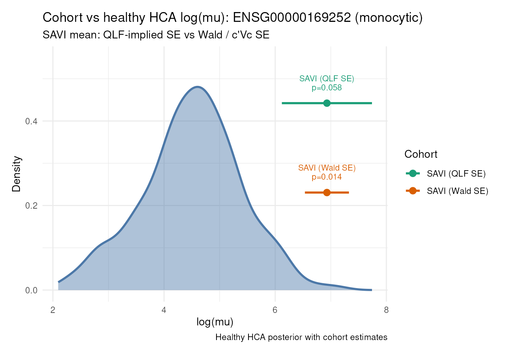

Cohort expression workflow (native edgeR)
Chen Zhan
2026-09-09
cohort-expression-edger-native.RmdSAVI case study: ADRB2 (ENSG00000169252) in
disease-associated monocytes.
This report mirrors
vignette("cohort-expression-core", package = "posteriorHCA"),
but exposes the edgeR/limma steps inline instead of
calling posteriorHCA helpers for scaling, offsets, fitting, contrast
estimation, or SE extraction.
Allowed posteriorHCA helpers before the HCA expression query:
load_reference_sample()
merge_with_reference_sample()Everything else on the USER side is written with ordinary
edgeR, limma, and base R. The purpose is
diagnostic:
If we remove posteriorHCA’s edgeR helper abstractions, what is the simplest transparent sequence of native edgeR/limma calls that reproduces our scaling, USER model fitting, contrast estimate, and the proposed
glmQLFTest()-derived uncertainty?
Workflow:
- Load / merge one HCA reference library with USER counts
- Joint TMMwsp scaling (explicit
calcNormFactors) - USER-only regression with
offset = log(E_user) -
model.matrix()→glmQLFit()→makeContrasts()→glmQLFTest() - Natural-log estimate + QLF-implied SE; shift absolute estimand by
log(E_HCA) - HCA posterior query and
welch_test_means()(same as the core report)
Prepare counts with Ensembl gene ids
Same USER dataset and metadata as the core-function report.
data(savi_mono)
user_counts <- as.matrix(Seurat::GetAssayData(savi_mono, layer = "counts"))
mapped <- AnnotationDbi::mapIds(
org.Hs.eg.db,
keys = rownames(user_counts),
column = "ENSEMBL",
keytype = "SYMBOL",
multiVals = "first"
)
keep <- !is.na(mapped) & !duplicated(mapped)
user_counts <- user_counts[keep, , drop = FALSE]
rownames(user_counts) <- unname(mapped[keep])
sample_metadata <- data.frame(
Category = factor(savi_mono$Category[colnames(user_counts)]),
Experiment = factor(savi_mono$Experiment[colnames(user_counts)]),
row.names = colnames(user_counts),
stringsAsFactors = FALSE
)
dim(user_counts)
#> [1] 17116 17
table(sample_metadata$Category, sample_metadata$Experiment)
#>
#> EXP1 EXP2 EXP3
#> CTRL 3 2 2
#> SAVI 2 2 1
#> SAVI_treated 3 2 0Reference preparation (posteriorHCA)
reference <- load_reference_sample(cell_type)
reference$sample_id
#> [1] "e11a0d767c2a97f658791b17cae25860____SC142___monocytic"
length(reference$counts)
#> [1] 10632
counts_joint <- merge_with_reference_sample(
user_counts,
reference = reference$counts,
reference_name = reference$sample_id
)
reference_name <- reference$sample_id
dim(counts_joint)
#> [1] 9617 18
setdiff(colnames(counts_joint), colnames(user_counts))
#> [1] "e11a0d767c2a97f658791b17cae25860____SC142___monocytic"The HCA reference is added only so joint TMM can put USER and HCA libraries on a common scale. It must not enter the USER regression.
Explicit joint TMMwsp scaling
Same default method as calculate_tmm_scaling()
(method = "TMMwsp").
ref_col <- match(reference_name, colnames(counts_joint))
norm_factors <- edgeR::calcNormFactors(
counts_joint,
refColumn = ref_col,
method = "TMMwsp"
)
library_size <- colSums(counts_joint)
effective_size <- library_size * norm_factors
E_hca <- unname(effective_size[[reference_name]])
user_names <- setdiff(colnames(counts_joint), reference_name)
E_user <- effective_size[user_names]
log_E_user <- log(E_user)
log_E_hca <- log(E_hca)
data.frame(
sample = c(user_names, reference_name),
library_size = c(library_size[user_names], library_size[[reference_name]]),
norm_factor = c(norm_factors[user_names], norm_factors[[reference_name]]),
effective_size = c(E_user, E_hca),
role = c(rep("user", length(user_names)), "hca_reference"),
row.names = NULL
)
#> sample library_size
#> 1 C1_17. Disease-associated monocytes 347205
#> 2 C10_17. Disease-associated monocytes 122614
#> 3 C11_17. Disease-associated monocytes 229924
#> 4 C2_17. Disease-associated monocytes 426861
#> 5 C7_17. Disease-associated monocytes 31483
#> 6 C8-aunt-P1-STING_17. Disease-associated monocytes 49498
#> 7 C9-mother-P1-STING_17. Disease-associated monocytes 81760
#> 8 P1-STING-ht_17. Disease-associated monocytes 24224
#> 9 P1-STING-ht-T_17. Disease-associated monocytes 127446
#> 10 P1-STING-ht-T2_17. Disease-associated monocytes 71463
#> 11 P2-STING-ht_17. Disease-associated monocytes 45098
#> 12 P2-STING-ht-T_17. Disease-associated monocytes 40347
#> 13 P4-STING-ht_17. Disease-associated monocytes 1527144
#> 14 P4-STING-ht-T_17. Disease-associated monocytes 241055
#> 15 P5-STING_17. Disease-associated monocytes 747477
#> 16 P6-STING-ht_17. Disease-associated monocytes 6123996
#> 17 P6-STING-ht-T_17. Disease-associated monocytes 1164357
#> 18 e11a0d767c2a97f658791b17cae25860____SC142___monocytic 3559173
#> norm_factor effective_size role
#> 1 1.0233563 355314.42 user
#> 2 1.3611822 166900.00 user
#> 3 1.3847878 318395.95 user
#> 4 1.2153675 518793.00 user
#> 5 1.2006225 37799.20 user
#> 6 0.9734889 48185.75 user
#> 7 0.9818609 80276.95 user
#> 8 1.3858786 33571.52 user
#> 9 0.9414885 119988.94 user
#> 10 0.8846274 63218.13 user
#> 11 1.1663582 52600.42 user
#> 12 1.0189958 41113.42 user
#> 13 0.6120595 934702.92 user
#> 14 0.8683783 209326.93 user
#> 15 0.8085947 604405.96 user
#> 16 0.6037752 3697516.63 user
#> 17 0.9937728 1157106.34 user
#> 18 1.0506977 3739615.04 hca_reference
c(E_hca = E_hca, log_E_hca = log_E_hca)
#> E_hca log_E_hca
#> 3.739615e+06 1.513449e+01USER regression excludes the HCA reference
counts_fit <- counts_joint[, user_names, drop = FALSE]
metadata_fit <- sample_metadata[user_names, , drop = FALSE]
stopifnot(identical(colnames(counts_fit), rownames(metadata_fit)))
offset_mat <- matrix(
log_E_user[colnames(counts_fit)],
nrow = nrow(counts_fit),
ncol = ncol(counts_fit),
byrow = TRUE
)
dim(offset_mat)
#> [1] 9617 17
range(offset_mat[1, ] - log_E_user[colnames(counts_fit)])
#> [1] 0 0Offset is log(E_user). No scaleOffset(),
and USER offsets are not centred around E_hca.
Design matrix
Primary design matches the core report’s SAVI group-mean estimand
used in Welch comparison: one mean per Category.
design <- model.matrix(~ 0 + Category, data = metadata_fit)
colnames(design)
#> [1] "CategoryCTRL" "CategorySAVI" "CategorySAVI_treated"
head(design)
#> CategoryCTRL CategorySAVI
#> C1_17. Disease-associated monocytes 1 0
#> C10_17. Disease-associated monocytes 1 0
#> C11_17. Disease-associated monocytes 1 0
#> C2_17. Disease-associated monocytes 1 0
#> C7_17. Disease-associated monocytes 1 0
#> C8-aunt-P1-STING_17. Disease-associated monocytes 1 0
#> CategorySAVI_treated
#> C1_17. Disease-associated monocytes 0
#> C10_17. Disease-associated monocytes 0
#> C11_17. Disease-associated monocytes 0
#> C2_17. Disease-associated monocytes 0
#> C7_17. Disease-associated monocytes 0
#> C8-aunt-P1-STING_17. Disease-associated monocytes 0Fit with glmQLFit() (edgeR v4 QL)
The current non-legacy edgeR v4 QL workflow estimates the NB
dispersion internally in glmQLFit(), while gene-specific
variability is represented through moderated quasi-dispersions
(s2.post). No separate estimateDisp() call.
prior.count = 0 matches the package helper on Bioconductor
release edgeR.
ql_args <- list(
y = counts_fit,
design = design,
offset = offset_mat,
robust = TRUE
)
if (utils::packageVersion("edgeR") < "4.99.0") {
ql_args$prior.count <- 0
}
fit <- do.call(edgeR::glmQLFit, ql_args)
c(
n_genes = nrow(fit),
n_coef = ncol(fit$coefficients),
nb_dispersion = unname(as.numeric(fit$dispersion)[[1]]),
average_ql_dispersion = unname(as.numeric(fit$average.ql.dispersion)[[1]])
)
#> n_genes n_coef nb_dispersion
#> 9617.000000 3.000000 0.281383
#> average_ql_dispersion
#> 1.032946Contrast: absolute SAVI group mean
contrast <- limma::makeContrasts(
CategorySAVI,
levels = design
)
stopifnot(ncol(contrast) == 1L)
contrast
#> Contrasts
#> Levels CategorySAVI
#> CategoryCTRL 0
#> CategorySAVI 1
#> CategorySAVI_treated 0Interpretation: under ~ 0 + Category,
CategorySAVI is the absolute normalized log mean for the
SAVI group (not a difference, and not a marginal mean over
Experiment).
glmQLFTest() → estimate + QLF-implied SE
qlf <- edgeR::glmQLFTest(fit, contrast = contrast)
# logFC is log2; convert to natural log used by posteriorHCA.
estimate_ln <- qlf$table$logFC * log(2)
# QLF-implied effective SE from the one-dimensional moderated QL F statistic.
# Not an exact coefficient-covariance SE; compatibility with Bayesian
# posterior SD is being evaluated separately.
se_ln <- abs(qlf$table$logFC) / sqrt(qlf$table$F) * log(2)
user_result <- data.frame(
gene = rownames(qlf$table),
estimate = estimate_ln,
se = se_ln,
F = qlf$table$F,
PValue = qlf$table$PValue,
stringsAsFactors = FALSE
)
user_gene <- user_result[user_result$gene == gene_ensg, , drop = FALSE]
user_gene
#> gene estimate se F PValue
#> 2617 ENSG00000169252 -8.204147 0.8108221 102.3801 5.367459e-11Shift absolute estimand to the HCA scale
Valid here because CategorySAVI is an
absolute estimand. Do not add log(E_hca)
to a relative difference contrast.
user_gene$log_mu <- user_gene$estimate + log_E_hca
user_gene$mu <- exp(user_gene$log_mu)
user_gene$se_log_mu <- user_gene$se
n_savi <- sum(metadata_fit$Category == "SAVI")
user_log_mu <- user_gene$log_mu
user_se <- user_gene$se_log_mu
c(log_mu = user_log_mu, se = user_se, n = n_savi)
#> log_mu se n
#> 6.9303460 0.8108221 5.0000000
user_gene[, c("gene", "estimate", "log_mu", "mu", "se", "se_log_mu")]
#> gene estimate log_mu mu se se_log_mu
#> 2617 ENSG00000169252 -8.204147 6.930346 1022.848 0.8108221 0.8108221Diagnostic comparison with the core-function helpers
The block below calls posteriorHCA helpers only for side-by-side diagnostics. The native path above does not depend on them.
scaling_pkg <- calculate_tmm_scaling(
counts_joint,
reference_name = reference_name
)
core_est <- estimate_ql(
counts = counts_fit,
offset = log_E_user[colnames(counts_fit)],
metadata = metadata_fit,
formula = ~ 0 + Category,
contrast = "CategorySAVI"
)
core_est <- core_est[core_est$gene == gene_ensg, , drop = FALSE]
scaling_check <- data.frame(
quantity = c("E_hca", "mean_E_user", "log_E_hca"),
native = c(E_hca, mean(E_user), log_E_hca),
package = c(
scaling_pkg$hca_effective_library_size,
mean(scaling_pkg$effective_size[user_names]),
scaling_pkg$hca_log_effective_library_size
)
)
scaling_check$diff <- scaling_check$native - scaling_check$package
scaling_check
#> quantity native package diff
#> 1 E_hca 3.739615e+06 3.739615e+06 0
#> 2 mean_E_user 4.964245e+05 4.964245e+05 0
#> 3 log_E_hca 1.513449e+01 1.513449e+01 0
comparison <- data.frame(
gene = gene_ensg,
estimate_native_qlf = user_gene$estimate,
estimate_core_wald = core_est$estimate,
estimate_diff = user_gene$estimate - core_est$estimate,
log_mu_native = user_gene$log_mu,
log_mu_core = core_est$estimate + scaling_pkg$hca_log_effective_library_size,
SE_QLF = user_gene$se,
SE_Wald_core = core_est$se,
SE_QLF_over_SE_Wald = user_gene$se / core_est$se,
stringsAsFactors = FALSE
)
comparison
#> gene estimate_native_qlf estimate_core_wald estimate_diff
#> 1 ENSG00000169252 -8.204147 -8.204147 0
#> log_mu_native log_mu_core SE_QLF SE_Wald_core SE_QLF_over_SE_Wald
#> 1 6.930346 6.930346 0.8108221 0.3961903 2.046547Scaling and the natural-log point estimate should agree (same counts,
reference, TMMwsp, design, contrast, and prior.count = 0).
The SE ratio is diagnostic: QLF-implied SE versus the package Wald /
c'Vc SE need not be equal.
HCA posterior
Same query as the core-function report (healthy blood, 10x Genomics
3). The USER estimand is the SAVI Category mean under
~ 0 + Category (no Experiment conditioning). The HCA query
is a healthy baseline for the same cell type / gene; it is not
conditioned on USER Experiment levels.
expression_fit <- load_expression_fit(
cell_type = cell_type,
gene_ensg = gene_ensg
)
newdata <- build_newdata_grid(
expression_fit,
disease_groups = "Normal",
tissue_groups = "blood",
assay_groups = "10x Genomics 3"
)
posterior_draws <- expression_draws(
expression_fit,
newdata = newdata,
quantity = "linpred",
collapse = "mean"
)Comparison
Welch tests of the same SAVI log_mu against the HCA
posterior, using either the QLF-implied SE (native path) or the Wald /
c'Vc SE (core helper). Point estimates match; only the SE
changes.
posterior_summary <- summarize_posterior_draws(
posterior_draws,
value = user_log_mu
)
user_log_mu_core <- core_est$estimate + log_E_hca
user_se_core <- core_est$se
test_qlf <- welch_test_means(
mu1 = user_log_mu,
se1 = user_se,
mu2 = posterior_summary$log_mu,
se2 = posterior_summary$se,
n1 = n_savi,
n2 = posterior_summary$n
)
test_wald <- welch_test_means(
mu1 = user_log_mu_core,
se1 = user_se_core,
mu2 = posterior_summary$log_mu,
se2 = posterior_summary$se,
n1 = n_savi,
n2 = posterior_summary$n
)
test_results <- data.frame(
group = c("SAVI (QLF SE)", "SAVI (Wald SE)"),
n = n_savi,
log_mu = c(test_qlf$mu1, test_wald$mu1),
se = c(test_qlf$se1, test_wald$se1),
hca_log_mu = c(test_qlf$mu2, test_wald$mu2),
hca_se = c(test_qlf$se2, test_wald$se2),
p_value = c(test_qlf$p_value, test_wald$p_value),
stringsAsFactors = FALSE
)
test_results
#> group n log_mu se hca_log_mu hca_se p_value
#> 1 SAVI (QLF SE) 5 6.930346 0.8108221 4.503811 0.8879115 0.05787817
#> 2 SAVI (Wald SE) 5 6.930346 0.3961903 4.503811 0.8879115 0.01397985Plots
plot_hca_draws(
draws = posterior_draws,
subtitle = "Normal, 10x Genomics 3 healthy baseline"
)
plot_cohort_vs_hca(
hca_draws = posterior_draws,
cohort_est = test_results,
subtitle = "SAVI mean: QLF-implied SE vs Wald / c'Vc SE",
annotate = c("group", "p_value")
)
Session info
sessionInfo()
#> R version 4.6.1 (2026-06-24)
#> Platform: x86_64-pc-linux-gnu
#> Running under: Ubuntu 24.04.4 LTS
#>
#> Matrix products: default
#> BLAS: /usr/lib/x86_64-linux-gnu/openblas-pthread/libblas.so.3
#> LAPACK: /usr/lib/x86_64-linux-gnu/openblas-pthread/libopenblasp-r0.3.26.so; LAPACK version 3.12.0
#>
#> locale:
#> [1] LC_CTYPE=en_US.UTF-8 LC_NUMERIC=C
#> [3] LC_TIME=en_US.UTF-8 LC_COLLATE=en_US.UTF-8
#> [5] LC_MONETARY=en_US.UTF-8 LC_MESSAGES=en_US.UTF-8
#> [7] LC_PAPER=en_US.UTF-8 LC_NAME=C
#> [9] LC_ADDRESS=C LC_TELEPHONE=C
#> [11] LC_MEASUREMENT=en_US.UTF-8 LC_IDENTIFICATION=C
#>
#> time zone: UTC
#> tzcode source: system (glibc)
#>
#> attached base packages:
#> [1] stats4 stats graphics grDevices utils datasets methods
#> [8] base
#>
#> other attached packages:
#> [1] edgeR_4.99.4 limma_3.99.0 org.Hs.eg.db_3.23.1
#> [4] AnnotationDbi_1.75.2 IRanges_2.47.5 S4Vectors_0.51.9
#> [7] Biobase_2.73.2 BiocGenerics_0.59.12 generics_0.1.4
#> [10] Seurat_5.5.1 SeuratObject_5.4.0 sp_2.2-3
#> [13] posteriorHCA_0.2.0 testthat_3.3.2
#>
#> loaded via a namespace (and not attached):
#> [1] fs_2.1.0 matrixStats_1.5.0
#> [3] spatstat.sparse_3.2-0 devtools_2.5.2
#> [5] httr_1.4.9 RColorBrewer_1.1-3
#> [7] tools_4.6.1 sctransform_0.4.3
#> [9] backports_1.5.1 R6_2.6.1
#> [11] uwot_0.2.5 withr_3.0.3
#> [13] Brobdingnag_1.2-9 gridExtra_2.3.1
#> [15] progressr_1.0.0 cli_3.6.6
#> [17] textshaping_1.0.5 spatstat.explore_3.8-2
#> [19] fastDummies_1.7.6 labeling_0.4.3
#> [21] sass_0.4.10 mvtnorm_1.4-2
#> [23] S7_0.2.2 spatstat.data_3.1-9
#> [25] brms_2.23.0 readr_2.2.0
#> [27] ggridges_0.5.7 pbapply_1.7-5
#> [29] QuickJSR_1.11.0 pkgdown_2.2.1
#> [31] systemfonts_1.3.2 StanHeaders_2.39.1
#> [33] parallelly_1.48.0 sessioninfo_1.2.4
#> [35] rstudioapi_0.19.0 RSQLite_3.53.3
#> [37] ica_1.0-3 spatstat.random_3.5-1
#> [39] vroom_1.7.1 dplyr_1.2.1
#> [41] distributional_0.8.1 inline_0.3.21
#> [43] loo_2.10.1 Matrix_1.7-6
#> [45] abind_1.4-8 lifecycle_1.0.5
#> [47] yaml_2.3.12 SummarizedExperiment_1.43.0
#> [49] SparseArray_1.13.2 Rtsne_0.17
#> [51] grid_4.6.1 blob_1.3.0
#> [53] promises_1.5.0 crayon_1.5.3
#> [55] miniUI_0.1.2 lattice_0.23-1
#> [57] cowplot_1.2.0 KEGGREST_1.53.6
#> [59] pillar_1.11.1 knitr_1.52
#> [61] GenomicRanges_1.65.4 future.apply_1.20.2
#> [63] codetools_0.2-20 glue_1.8.1
#> [65] V8_8.2.0 spatstat.univar_3.2-0
#> [67] data.table_1.18.6.1 vctrs_0.7.3
#> [69] png_0.1-9 spam_2.11-4
#> [71] gtable_0.3.6 cachem_1.1.0
#> [73] xfun_0.60 S4Arrays_1.13.0
#> [75] mime_0.13 Seqinfo_1.3.2
#> [77] coda_0.19-4.1 survival_3.8-11
#> [79] sccomp_2.5.0 SingleCellExperiment_1.35.2
#> [81] statmod_1.5.2 ellipsis_0.3.3
#> [83] fitdistrplus_1.2-6 ROCR_1.0-12
#> [85] nlme_3.1-171 usethis_3.2.1
#> [87] bit64_4.8.6 RcppAnnoy_0.0.23
#> [89] rstan_2.32.7 rprojroot_2.1.1
#> [91] tensorA_0.36.2.1 bslib_0.12.0
#> [93] irlba_2.3.7 KernSmooth_2.23-27
#> [95] otel_0.2.0 DBI_1.3.0
#> [97] tidyselect_1.2.1 processx_3.9.0
#> [99] bit_4.6.0 compiler_4.6.1
#> [101] curl_8.0.0 desc_1.4.3
#> [103] DelayedArray_0.39.6 plotly_4.12.1
#> [105] stringfish_0.19.2 posterior_1.7.0
#> [107] checkmate_2.3.4 scales_1.4.0
#> [109] lmtest_0.9-40 callr_3.8.0
#> [111] stringr_1.6.0 digest_0.6.39
#> [113] goftest_1.2-3 spatstat.utils_3.2-4
#> [115] rmarkdown_2.32 XVector_0.53.0
#> [117] htmltools_0.5.9 pkgconfig_2.0.3
#> [119] MatrixGenerics_1.25.0 fastmap_1.2.0
#> [121] rlang_1.3.0 htmlwidgets_1.6.4
#> [123] shiny_1.14.0 farver_2.1.2
#> [125] jquerylib_0.1.4 zoo_1.9-0
#> [127] jsonlite_2.0.0 magrittr_2.0.5
#> [129] dotCall64_1.2 bayesplot_1.16.0
#> [131] patchwork_1.3.2 Rcpp_1.1.2
#> [133] reticulate_1.47.0 stringi_1.8.9
#> [135] brio_1.1.5 MASS_7.3-66
#> [137] plyr_1.8.9 pkgbuild_1.4.8
#> [139] parallel_4.6.1 listenv_1.0.0
#> [141] ggrepel_0.9.8 forcats_1.0.1
#> [143] deldir_2.0-4 Biostrings_2.81.9
#> [145] splines_4.6.1 tensor_1.5.1
#> [147] hms_1.1.4 locfit_1.5-9.12
#> [149] ps_1.9.3 igraph_2.3.3
#> [151] spatstat.geom_3.8-2 RcppHNSW_0.7.0
#> [153] reshape2_1.4.5 qs2_0.3.1
#> [155] pkgload_1.5.3 rstantools_2.7.1
#> [157] evaluate_1.0.5 RcppParallel_6.2.1
#> [159] tzdb_0.5.0 httpuv_1.6.17
#> [161] RANN_2.6.3 tidyr_1.3.2
#> [163] purrr_1.2.2 polyclip_1.10-7
#> [165] future_1.75.0 scattermore_1.2
#> [167] ggplot2_4.0.3 BiocBaseUtils_1.15.1
#> [169] xtable_1.8-8 RSpectra_0.16-2
#> [171] later_1.4.8 viridisLite_0.4.3
#> [173] ragg_1.5.2 instantiate_0.2.3
#> [175] tibble_3.3.1 memoise_2.0.1
#> [177] cluster_2.1.8.3 globals_0.19.1
#> [179] bridgesampling_1.2-1